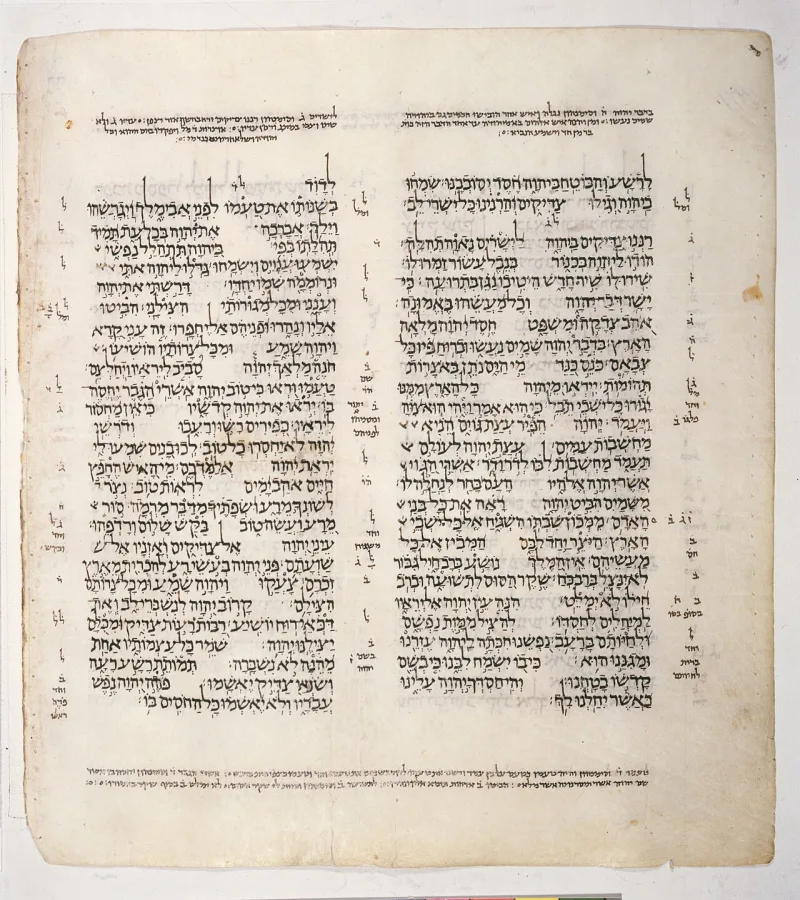
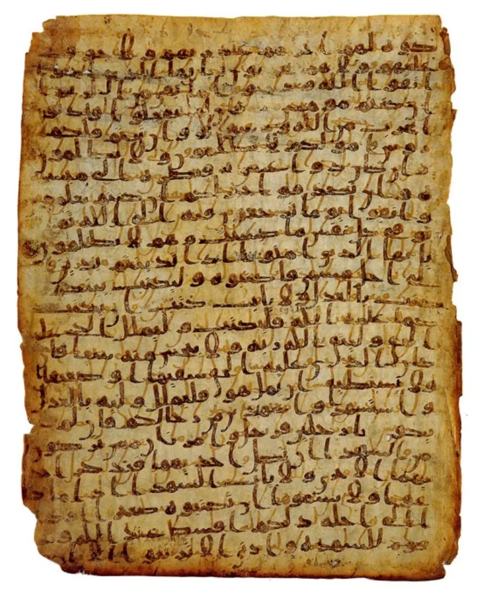
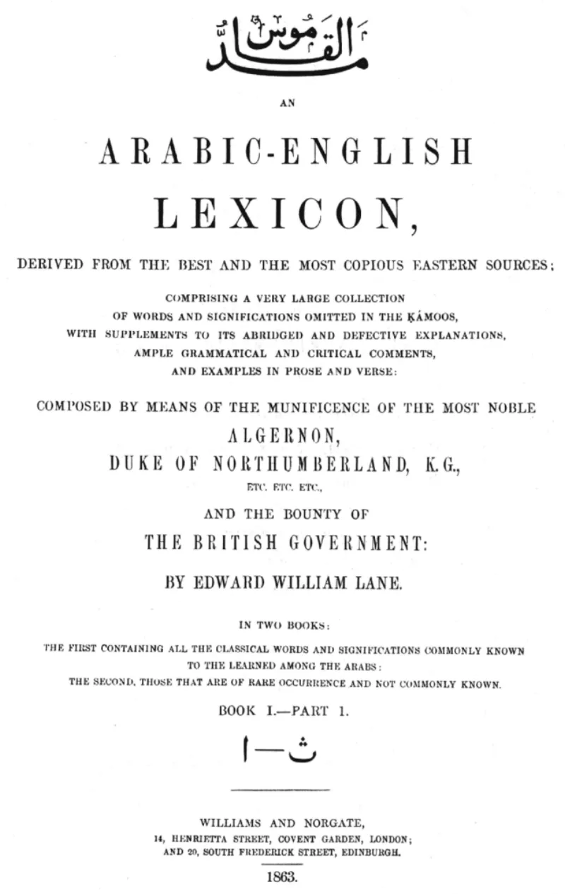

Muslim scholars have a real answer here. Say so before your friend does.
Quran 3:54 and Quran 8:30 call Allah khayru al-makirin. It is usually translated "best of planners." The root m-k-r carries scheming and guile in the classical lexicons Lane and Lisan al-Arab.
Quran 3:54 sits in the crucifixion passage. Allah's makr answers the plotting of others.
Quran 4:157 gives the result: it was made to appear so to them. Scripture says the opposite of God — He "cannot lie" (Titus 1:2; Numbers 23:19; Hebrews 6:18).
Islamweb fatwa 295183 answers on three fronts. Makr means a hidden stratagem, neutral in itself, judged by its target.
Allah's is always a response to human plotting (3:54; 8:30; 10:21) and never aimed at the sincere. And the Bible has hard parallels.
A lying spirit is sent in 1 Kings 22:22-23. A strong delusion is sent in 2 Thessalonians 2:11.
A prophet is deceived in Ezekiel 14:9.
On the word itself, critics are right. The Quran uses makr of humans negatively, including evil makr in 35:43.
Softened translations do hide that. But counter-scheming against plotters is defensible, and the biblical texts show Christians must draw the same distinctions.
Weak alone, useful beside the crucifixion case. Do not say "Allah is a deceiver" — that is unfair to how Arabic works.
The narrow point is Quran 4:157. On the mainstream reading, the ones deceived were sincere disciples.
"May I ask how you read Quran 4:157 — who was it that the appearance deceived?"



They say the word means a hidden plan, always aimed back at plotters.
Islamweb fatwa 295183, and treatments citing Jamal Badawi, answer on three fronts. First, makr means a hidden stratagem. It is morally neutral in itself, and its worth depends on its object. Allah's makr is always payback. It out-plans the plotters in order to protect the innocent — here, to save Jesus from murder. So 'best of planners' is ethics, not a cover-up.
Second, the Quran always uses makr of Allah in answer to human makr (3:54; 8:30; 10:21). It is never started against the sincere. Third, the counter-charge has teeth. The Bible has God sending a lying spirit (1 Kings 22:22-23), and a strong delusion so they believe the lie (2 Thessalonians 2:11), and deceiving prophets (Ezekiel 14:9). If makr indicts Allah, those indict Yahweh.
Weak on its own; it works best beside the case on the cross.
On the word itself, the critics are on firm ground. Makr is used of humans in a bad sense all through the Quran, including evil makr in 35:43. Softened translations like 'best of planners' are driven by the needs of debate.
But the charge against God is weaker than the word study. Out-planning plotters is fair conduct. And the Bible texts show that Christians must draw the same line themselves, between a court judgment on the wicked and lying by nature.
Where the argument keeps its bite is 4:157. On mainstream tafsir, Allah's plan made a false sight. It deceived Jesus's own sincere followers, and it founded six hundred years of what Islam calls error. That is a sincere man deceived, which the Bible texts do not match. It works best beside the case on the cross.